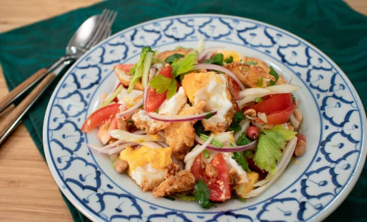

Yum Kai Dao

Description
A cool recipe that I never ate, maybe one day will, who knows?
Ingredients
- 1-2 Thai chillies
- 1.5 tbsp palm sugar
- 3 tbsp lime juice
- 2 tbsp +1 tsp fish sauce
- oil for frying
- 4 eggs
- 1/4 small red onion
- 2 stalks celery
- 1/2 cup tomatoes
- 1/2 cup cilantro
- 1/4 cup roasted peanuts
Steps
- Add the chilies to a mortar and pestle and pound until fine. Add the palm sugar and pound to dissolve into a thick paste. Add the lime juice and fish sauce and stir to combine.
- In a wok or an small non-stick frying pan, add about a quarter inch of oil. Heat the oil over medium high heat until very hot (you can add a little piece of onion as a heat tester, and once it's bubbling excitedly, the oil is ready to go.)
- Crack one egg into the oil, and if your oil is hot enough the egg white should start to bubble right away. Use a spoon to baste the top of the egg with oil as it fries, and keep going for about 2 minutes or until the yolk is set and the white is bubbly and browned around the edges.
- Remove the egg from the pan and let it drain on a paper towel lined plate. Repeat with the remaining eggs.
- Combine all the vegetables in a mixing bowl.
- Cut the eggs into six wedges, centred around the yolk so that there is a little bit of yolk in every piece.
- Add the eggs to the vegetables and pour the dressing over. Toss gently just to mix and plate. Top with roasted peanuts and serve with jasmine rice. Enjoy!